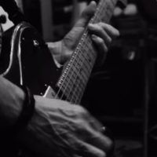
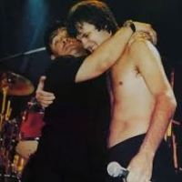

Los Piojos mostraron un enigmático video de un ensayo de cara al regreso a los escenarios: el detalle que llamó la atención

Andrés Ciro, el cantante de Los Piojos, homenajeó a Maradona al tocar el himno en la cancha de Napoli
Los Piojos anunciaron la venta de estacionamientos para sus shows en La Plata
La bajista Luli Bass reemplaza a Micky Rodríguez en el regreso de Los Piojos
Juan Ábalos: De nuevo guitarrista de Los Piojos al sueño de tocar en el Cosquín Folclore con los Gauchos of the Pampa